插入
Insert
- 数据下载透视表数据、图表数据、图片素材
数据透视表
- . 功能非常强大的分析工具，特别适合两个维度的分类汇总，如按月、季度、地区等
- . 抛弃函数的使用去实现目标 - "表哥"
- . 难点在于对数据的需求不明晰
- . 实际上处理的是原始数据 - 流水账。。。
- . 透视表本质上还是一个表，由"行Rows"、"列Columns"和"Σ值Values"组成，另外还多了一个"筛选Filters"
- 要求
- . 有标题行，且是第一行
- . 必须是一维表
- . 不能有空行
- . 不能有空单元格
- . 不能有合并单元格
- . 建议从超级表开始
-
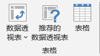 表格 - 常用操作
- . 命名透视表
- . 移动透视表
- . 字段设置、字段设置
- . 推迟布局更新：大数据量时，请开启。。。否则可能卡到你怀疑人生；但是部分功能会被暂时被限制
- . 手动刷新：数据源部分值变化后，默认不会自动更新，需要手动刷新；可以使用"数据透视表分析"的刷新或选项卡"数据"中的刷新
- . 自动刷新：设置透视表"选项" → "数据" → "每次打开文件时刷新数据"
- 批量生成多种工作表 - 拆分工作表
-
将准备好的通信录名单[有名字即可]生成透视表将"名字"列拖动到"筛选""选项"→"显示报表筛选页"，分配到各个新工作表
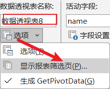 拆分工作表
图表
- . 数据可视化的得力工具
- . 充分利用动态选项卡"图表工具"的"图表设计"和"格式"
-
图表主要组成部分 组成 说明 图表区 Chart Area 绘图区 Plot Area 图表标题 Chart Title 数据系列 Data Series 数据标签 Data Labels 图例 Legend 坐标轴 Axis 网格线 Gridline - 柱形图
- 饼图
- 折线图
- 条形图
- 组合图
-
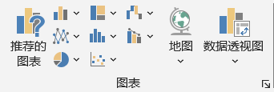 图表 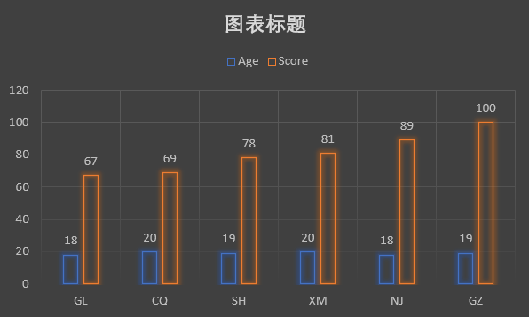 柱形图 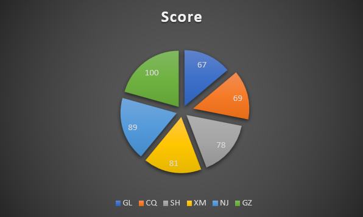 饼图 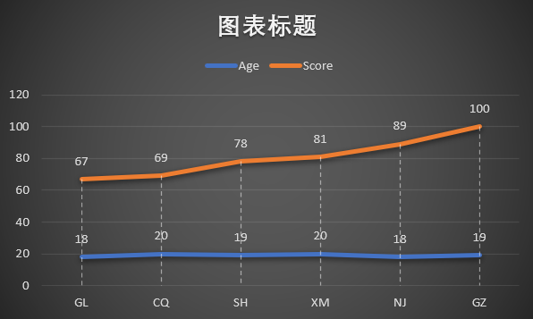 折线图 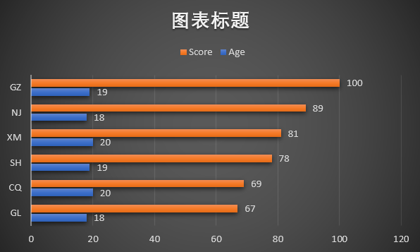 条形图 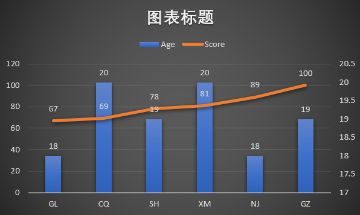 组合图 - 定制多个环型数据
迷你图
- 折线
- 柱形
- 盈亏
-
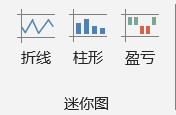 迷你图 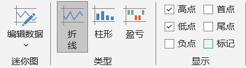 迷你图工具 - 迷你折线图
- . 基本步骤
-
创建工作簿创建数据结构准备数据生成迷你图格式化迷你图
- . 具体步骤
-
创建工作簿并以学号+姓名命名，如2023张树彬.xlsx在默认的工作表A1单元格输入分公司在B1单元格输入"一月"将光标定位在B1右下角，变为十字形后，按住鼠标左键向右拖动至十二月在A2-A5分别输入分公司名称利用randbetween创建假数据：在数据区域下方较远出某个单元格，输入=randbetween(60,100)，生成60到100的随机数同样，向右拖动，生成12个数据选中这12个数据，复制粘贴给第一个分公司，仅仅粘贴数字依次操作，为其他分公司粘贴随机数字在数据区域最后一列N1添加标题"走势图"定位在N2单元格→"插入"→"迷你图"→"折线"，数据范围选择左侧的12个数据项并确认设置折线的高、低点向下拖动，快速完成其他数据行的折线图创建其他格式自行设计：迷你图颜色、标记颜色等选择其他类型的迷你图，查看效果
- 如何删除迷你图？
-
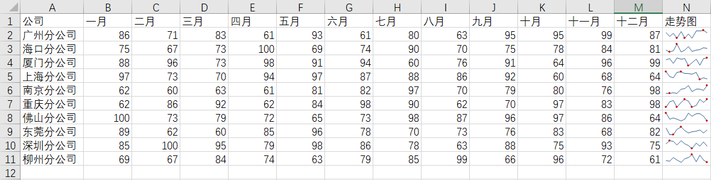 折线图的创建
演示
- 三维地图
- . 可惜使用不了
其它分组
- . 同Word操作
-
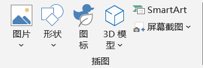 插图 演示 筛选器 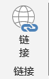 链接 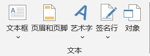 文本 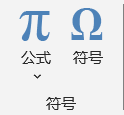 符号